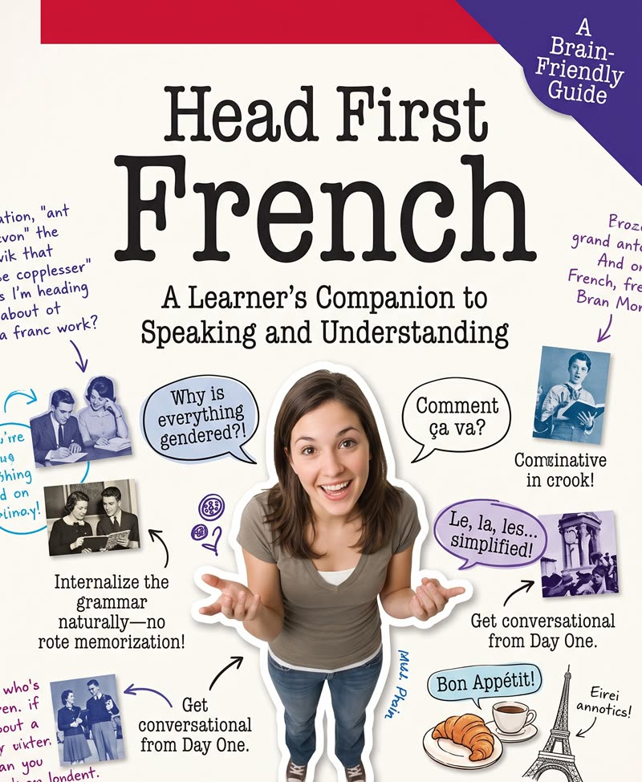

想學新語言？看這本就對了
Head First French
又稱 Tête la première
法語從零學到 NCLC 7，寫給慣用英語和中文思考的你。
這門課專為一種讀者而設：你的英語不錯（約 CLB 7 至 9），從小講廣東話或普通話，現在要在 TEF Canada 或 TCF Canada 考到法語 NCLC 7。達到這個等級，就能在快速通道（Express Entry）拿到法語加分。
你手上已經有兩種語言，正好派上用場。英語會免費送你幾千個生字，因為英語詞彙約有三分之一來自法語。中文則送你一些以英語為母語的人最頭痛的發音，例如 tu 裡的 u，就是「書」(syu1) 或「魚」(yú) 的元音。
按一下任何 mot en rouge，就能聽到發音。先由如何使用本書看起。
NCLC 7 對應的考試分數
| 技能 | TEF Canada | TCF Canada |
|---|---|---|
| 聽力（compréhension orale） | 249–279 | 458–502 |
| 閱讀（compréhension écrite） | 207–232 | 453–498 |
| 寫作（expression écrite） | 310–348 | 10–11 |
| 口語（expression orale） | 310–348 | 10–11 |
四項技能都要達到 NCLC 7，不是按平均分計算！
分數範圍摘自 IRCC 的語言考試成績對照表。報考前請先上 IRCC 官方網站核對，因為對照表時有修訂。